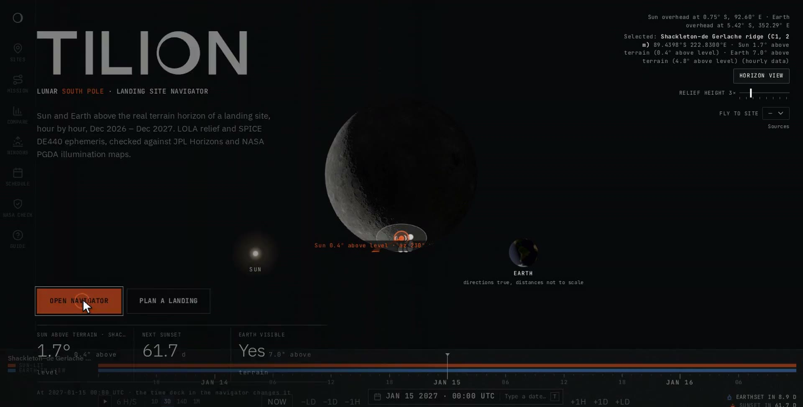
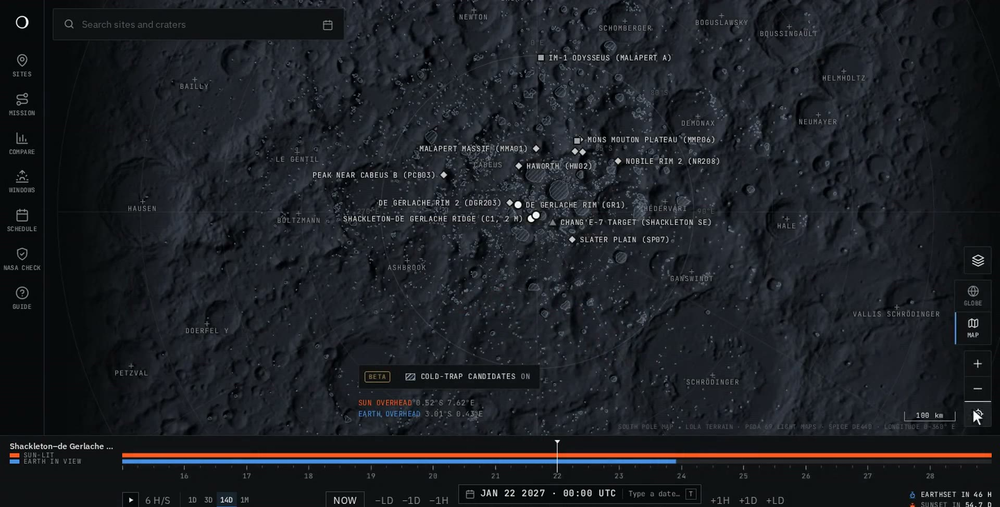
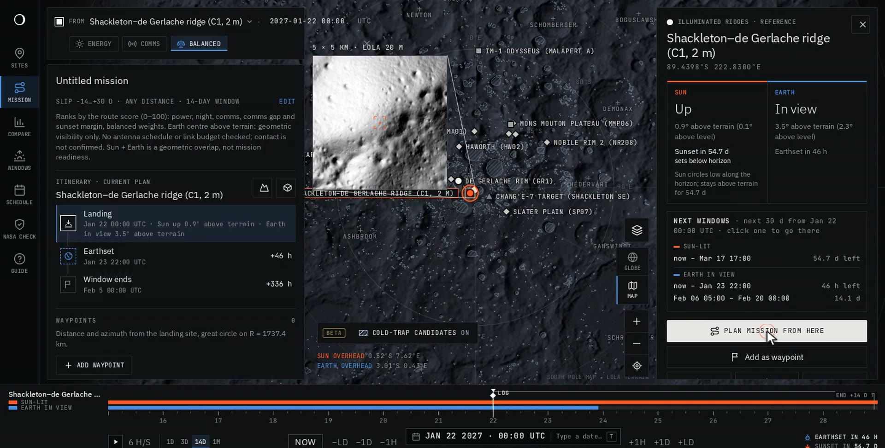
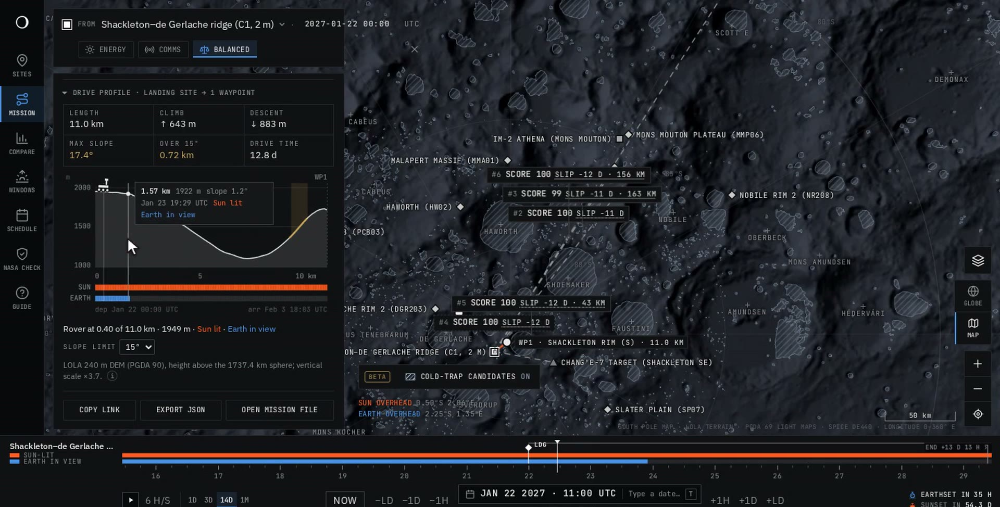

02 · One screen
Pick a site and a date.
- 24 sites: Artemis III regions, CLPS, other nations, Apollo. Or any point 60–90°S.
- Sun elevation above the terrain.
- Time to the next sunset and Earthset.
- Calendar of Sun and Earth windows.

Is the Sun up? When is sunset? Can we see Earth? — over the real terrain horizon of a landing site, for any date.



Public, free, no login. Runs in the browser (WebGL).